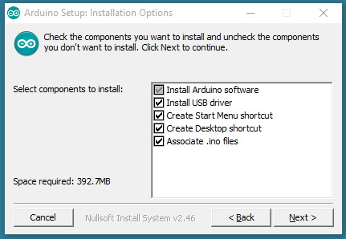
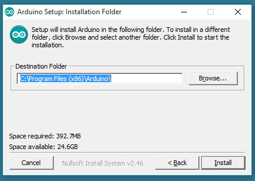
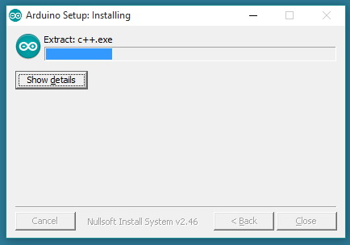
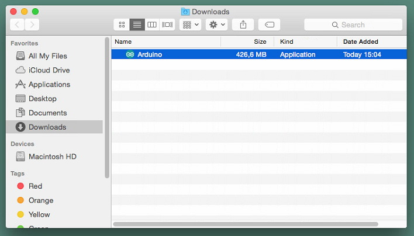
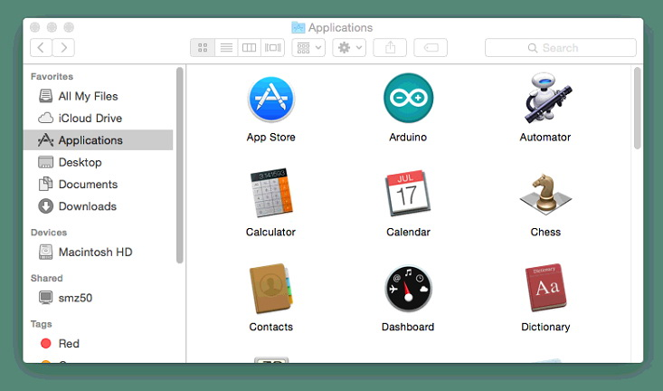
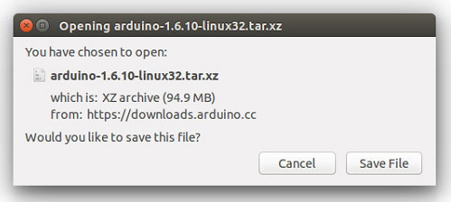
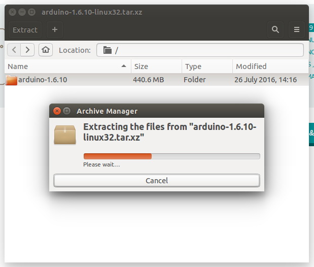
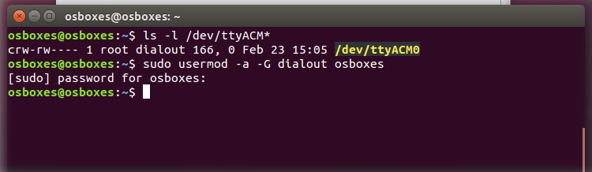

www.osoyoo.com
Back to NodeMCU Tutoial Index Page
Preview Lesson --- How to insatall the Arduino IDE
Introduction
This lesson will walk you through downloading, installing, and testing the Arduino IDE (short for Arduino Integrated Development Environment).Before you jump to the page for your operating system, make sure you’ve got every thing prepared.
Preparation:
- A computer (Windows, Mac, or Linux)
- An Arduino-compatible microcontroller(Osoyoo NodeMCU here)
- A USB A-to-B cable, or another appropriate way to connect your Arduino-compatible microcontroller to your computer (check out this USB buying guide if you’re not sure which cable to get).
Extended Reading
If you are new to Arduino general,check below links and you will be more familiar with it:
If you’re ready to get started, click on the link in the column on the left that matches up with your operating system, or you can jump to your operating system here.
Install the Arduino Software (IDE) on Windows PC
Download the Arduino Software (IDE)
Get the latest version from the download page. You can choose between the Installer (.exe) and the Zip packages. We suggest you use the first one that installs directly everything you need to use the Arduino Software (IDE), including the drivers. With the Zip package you need to install the drivers manually. The Zip file is also useful if you want to create a portable installation.
When the download finishes, proceed with the installation and please allow the driver installation process when you get a warning from the operating system.

Choose the components to install

Choose the installation directory (we suggest to keep the default one)

The process will extract and install all the required files to execute properly the Arduino Software (IDE)
Proceed with board specific instructions
When the Arduino Software (IDE) is properly installed you can go back to the Getting Started Home and choose your board from the list on the right of the page.
Install the Arduino Software (IDE) on MAC OS X
Download the Arduino Software (IDE)
Get the latest version from the download page. The file is in Zip format; if you use Safari it will be automatically expanded. If you use a different browser you may need to extract it manually.

Copy the Arduino application into the Applications folder (or elsewhere on your computer).

Proceed with board specific instructions
When the Arduino Software (IDE) is properly installed you can go back to the Getting Started Home and choose your board from the list on the right of the page.
Install the Arduino Software (IDE) on on Linux
Quick Start
The Linux build of the Arduino Software (IDE) is now a package that doesn't require ansy specific procedure for the various distributions availabe of Linux. The only relevant information is the 32 or 64 bit version of the OS.
Download the Arduino Software (IDE)
Get the latest version from the download page. You can choose between the 32, 64 and ARM versions. It is very important that you choose the right version for your Linux distro. Clicking on the chosen version brings you to the donation page and then you can either open or save the file. Please save it on your computer.

Extract the package
The file is compressed and you have to extract it in a suitable folder, remembering that it will be executed from there.

Run the install script
Open the arduino-1.6.x folder just created by the extraction process and spot the install.sh file. Right click on it and choose Run in Terminal from the contextual menu. The installation process will quickly end and you should find a new icon on your desktop.
If you don’t find the option to run the script from the contextual menu, you have to open a Terminal window and move into the arduino-1.6.x folder. Type the command ./install.sh and wait for the process to finish. You should find a new icon on your desktop.
Proceed with board specific instructions
When the Arduino Software (IDE) is properly installed you can go back to the Getting Started Home and choose your board from the list on the right of the page.
Please Read...
It might hapen that when you upload a sketch - after you have selected your board and serial port -, you get an errorError opening serial port ... If you get this error, you need to set serial port permission.
Open Terminal and type:
ls -l /dev/ttyACM*
you will get something like:
crw-rw---- 1 root dialout 188, 0 5 apr 23.01 ttyACM0
The "0" at the end of ACM might be a different number, or multiple entries might be returned. The data we need is "dialout" (is the group owner of the file).
Now we just need to add our user to the group:
sudo usermod -a -G dialout
where is your linux user name. You will need to log out and log in again for this change to take effect.

This is the procedure to access the serial port from the Arduino Software (IDE) if you get an error
After this procedure, you should be able to proceed normally and upload the sketch to your board or use the Serial Monitor.
The text of the Arduino getting started guide is licensed under a Creative Commons Attribution-ShareAlike 3.0 License. Code samples in the guide are released into the public domain.This paper is from:https://www.arduino.cc/en/Guide/HomePage,more info please click:https://www.arduino.cc/en/Guide/Environment